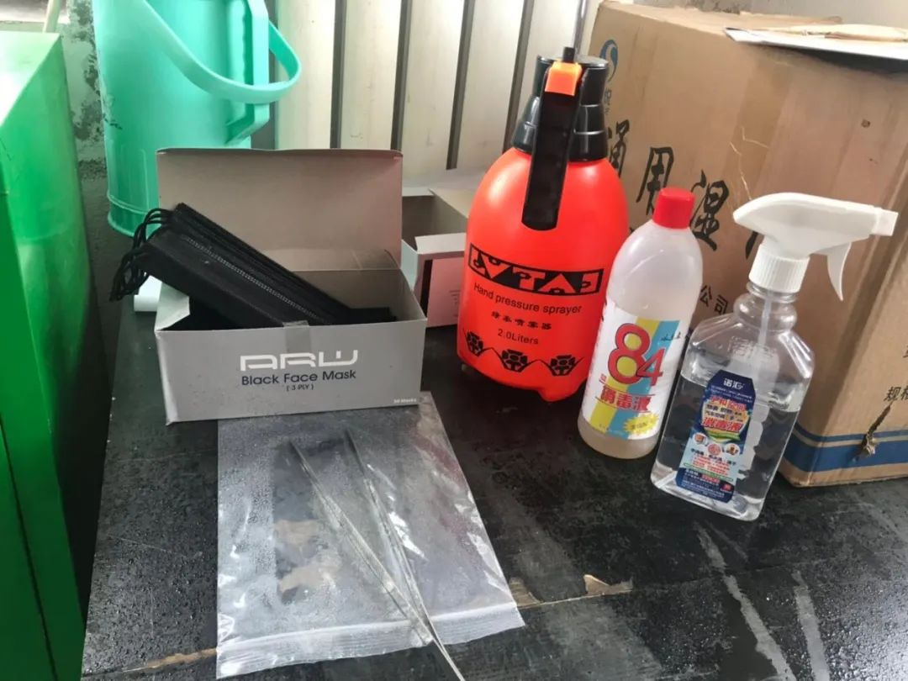
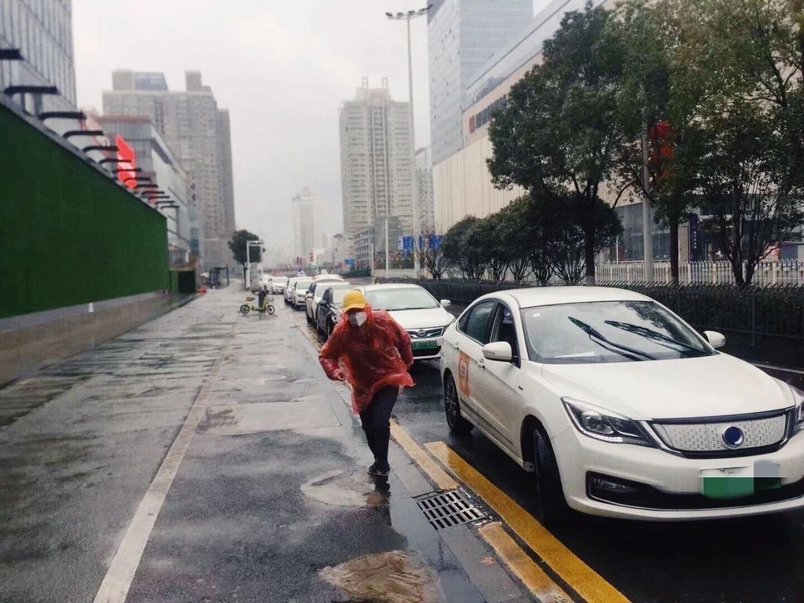

服装外贸行业等春来
原文链接 备份链接 本报记者 蒋政 北京报道 春节前订单延误波及整个产业链，春节后海外市场面临不确定性，疫情之下，服装外贸行业正受到阶段性影响。 “我们第一季度的订单，有80%几乎都没办法按时交货，金额差不多有一亿元。”作为福建省石狮市一 …
记者/ 张蕊
编辑/杨宝璐 宋建华

沙特阿拉伯展会的现场
2月初的沙特展会，江铃收获颇丰，因为“意向客户特别多”，她的烦恼是无法把战果继续扩大到接下来的印度展会和俄罗斯展会，因为两个国家都采取了入境限制。
庞红平还在等复工消息，作为一家贸易公司的老板，他对记者说：“上游的工厂，下游的物流都没有恢复正常，我们复工有什么用？”
截至3月6日，除中国外，全球已有70多个国家和地区发现新冠肺炎疫情，累积确诊病例超过1.7万人。疫情在全球的蔓延，给进出口贸易企业正带来更多的不确定性。
与此同时，国内纷纷推出扶持政策，帮助企业复产复工，北京、温州、宁波、深圳等地更是出台了“开证明书”、“补贴展位费”等措施，帮助中小外贸企业摆脱困境。

沙特展会“去得特别值”
姜家高至今都在庆幸自己赶上了沙特阿拉伯的展会，“感触特别深，去得特别值。”姜家是沈阳友邦游乐设备有限公司（以下简称“友邦游乐”）的负责人，公司主营大型游乐设备，这两年，友邦游乐拓展海外业务，去国外参展发展客户成了他的日常工作之一。
决定去沙特阿拉伯参展时，国内还尚未爆发疫情，姜家高找展会公司办理完参展手续、预定展位后，就又忙其他事了。到1月初，他在网上看到武汉发生疫情的消息，还没当回事儿，“以为就是一场病毒感冒。”
过年前10天，姜家高和同事开始为去沙特参展做准备，印了宣传单、宣传册，还制作了背景展板，但新冠肺炎的形势开始严峻起来，姜家高从新闻上看到病毒“人传人”的消息，才意识到它的严重性。与此同时，各地政府也开始要求大家出门戴口罩、不聚餐、不扎堆。
展会还去不去？姜家高开始纠结。“都是有孩子、有老人的家庭，路上也会有风险。”姜家高说。在跟两名一同前往的同事开了一个会后，三人决定，还是要去参展。
和姜家高一样，江铃一开始也没认为新冠病毒肺炎有多可怕，她所在的广东一家水上乐园设备制造公司也报名了此次沙特阿拉伯的会展，从2019年11月后，她就一直在为参展做准备，“所有东西都准备好了，疫情却发生了。”
“那会儿多地还传出要封城，形势一下紧张起来。”江铃承认，当时第一反应就是不去了。但沙特阿拉伯并没有限制中国人入境，且不参展无法退费，她还是决定放手一试，“如果不去，先机就没有了。”
根据会展公司安排的行程，参展团队需要从广州出发前往沙特，为了不耽误时间，姜家高特地买了沈阳最早一班直飞航班，想上午11点到广州，下午3点直接飞沙特，但出发前一天，航空公司发来短信，直飞航班取消了。
不得已，他改签了航班，当晚11点半才到达广州，入住酒店之后，姜家高稍微松了一口气，从沈阳到广州的酒店，光体温就测了7次。
第二天参展商集合后，团里有个女孩一直在咳嗽，为了不让大家误解，女孩还专门拿出病历本解释，自己只是普通感冒。
当天，原本能坐300人的飞机，只坐了不到40人，抵达沙特阿拉伯首都利雅得后，他们得知，第二天广州飞往利雅得的航班全部取消，看到来接他们的司机也戴着口罩，姜家高还曾担心中国人会不会受到歧视。
但“歧视”并未在展会上出现，姜家高告诉记者“人们没有因为我们来自中国，就远离我们的展台，还是和我们握手、交谈”，展会上几乎没有人戴口罩、手套。
江铃也发现展会的前面两天，主办方并没有任何关于“肺炎、病毒”等提示，直到第三天才开始提示大家“勤洗手”，“勤洗手，就没太大的问题。”

参展商在向客商介绍产品
无法参加的国际会展
实际上，前往利雅得参展，来自展会公司的敖焕压力很大，参展企业来自全国各地，一旦有一个人出问题，就会变成每个人的问题，“当时我都想要在广州做个核酸检测再出发。”好在大家都未出现感染，敖焕的心才慢慢放下来。
展会结束后，姜家高和伙伴想买一些口罩回国，但当时利雅得大部分商场已经没有口罩了，姜家高等人好不容易才找到一家超市有卖口罩的，取货时，超市经理还问他们“是不是来自中国”。“当得知我们是要将口罩捐赠给一线的医务工作者时，他特意带我们去了库房，说我们都可以带走。”姜家高说。
带着买到的几大箱口罩，姜家高和同事按照展览公司的建议，从迪拜中转回国。第二天在飞机上，他环视整个座舱，才发现，几乎所有回国的中国人都提着装口罩的箱子。
从利雅得回国后，敖焕本该马上开始准备2月下旬的印度展会和3月中旬的俄罗斯展会，但紧接着，这两场展会都因被“限制入境”而无法参加。
在江苏励行会展有限公司（以下简称“江苏励行”）列出的2020年计划中，共有印度、美国、俄罗斯、澳门等共计11个游乐设备展会，其中6月前有4个，6月后有7个。
敖焕和主办方进行了反复沟通，多数表示对受疫情影响无法参展的企业，已交的部分展位费用可以延期至下一届使用，但对企业而言，损失已无法避免。
“一个展会的展位费，样品和物流费等损失加起来差不多20万，两个最少也得损失40万。”虽然分摊到每个企业并不算太多，但一些无形的损失却是无法估量的。
这两天，他忙着帮企业准备资料，上报有关部门，为无法参展的商家申请补贴，“温州的补贴一个展位最多可以达到25000元，这至少可以减少客户70%-80%的损失。”敖焕说。
但目前并没有针对会展公司的补贴，敖焕大概估算了一下，印度、俄罗斯两次不能成行的会展，给公司造成的损失至少有10万元，更重要的是，倘若疫情影响到上半年的展会都无法参展，那对于下半年的续约非常不利。
在姜家高看来，如果错过上半年，公司海外市场的拓展计划又要延后了，尤其是俄罗斯和印度的展会，公司可能会失去更多新拓展的客户。
姜家高的公司为复工准备的消杀用品
交不了货的生产企业
这个春节，庞红平过得不太开心，作为北京艺美成贸易有限公司的老板，他做了十几年的建材出口生意，每年春节前后都是最忙的时期，“三月、四月是一年接订单的第一个高峰。”
往年大年初六，他就会结束假期，出差去国外收尾款、拜访客户，今年的安排本来也不例外，机票早早买好，但最终他不得不改签，而节后要来的客户也不能来了。
“3月份的展会现在看来也去不了，上半年是难指望了。”庞红平大概算了一下，停工一个月，他要支出的租金、员工工资差不多得十几万，“现在情况特殊，只能线上办公。”
庞红平告诉深一度记者，此前还想谈合作的客户，现在都已经在回避这个话题了，他的客户经常在微信上问国内疫情的情况，偶尔也会聊聊其他的事情，“但合作却闭口不谈。”庞红平无奈，年前的订单到现在还没能发出，“什么时候能发也不知道，客户都已经不提了。”
姜家高估算，此次疫情对公司2020年的营收肯定是有影响的，但尚在可接受的范围内，“公司还有些其他的业务，整体大概会下滑10%-20%。”
和庞红平情况类似，吴磊这个年过得也不踏实，直到目前公司还没复工。
吴磊的公司位于深圳的工业园内，是一家进出口企业，主营定位仪、导航、电子狗等汽车电子产品，市场集中在欧洲。2019年，公司效益还不错，“出口的营业额大概3000万。”吴磊告诉记者，他们年前很忙，经常加班，早上6点起床、晚上10点回家。
放假第二天，吴磊带着家人回老家四川过年。彼时的吴磊心情不错，节前的订单将近100万，他盘算着，年后回来还能签一些单，2020年怎么也不会比2019年差。
大年初三，吴磊从老家返回深圳，下高速的时候发现已开始被要求测体温，回家之后，小区又施行了封闭管理，“从初四回深圳，一直在家，没出过门。”
初七，原本是企业开始上班的日子，但整个工业园区静悄悄，几乎没有人。吴磊还打听到，电子市场也延期开门了，“具体开门时间未知。”
吴磊发愁，因为订单，公司春节前备了一些货和料，现在花出去的钱变成了库存，加上租金、工资、房贷、车贷，一个月不开工，吴磊要赔近20万。他不知道自己能坚持几个月，“最坏的结果就是关门吧。”
深圳有关部门注意到，一些外贸企业未能准时向境外客户交付产品，面临无法履行合同、承担巨大经济损失的问题。日前，深圳市贸促委为11家企业在线办理了首批新冠肺炎疫情不可抗力事实性证明书。得知消息后，吴磊立马开始准备材料，希望能尽快申请到这份“证明书”。
采访中，不少企业都表示，已经和客户进行了延期交货的沟通。广东一家进出口贸易公司告诉深一度记者，按照合同肯定是违约，但客户能够给予理解，愿意和公司共同承担由疫情造成的违约损失。
商务部国际贸易经济合作研究院副研究员庞超然告诉深一度记者，从外部因素来看，此次疫情爆发突然，在这样情况下，一些国家加强了对我国出口货物的检验检疫，部分国家暂停进口中国的部分产品，特别是食品类产品，短期来看，这些外部措施的确对中国产品出口造成了一定的不利影响，但基本可控。
庞超然分析说，第一季度是中国出口和生产的淡季，同时中国制造短期内不会被其他国家取代，各国对中国产品特别是零部件和中间产品具有刚性需求。
物流不畅，如何复工
这些天，吴磊打听到，不少企业都已申请复工，吴磊也想过，是不是先让部分员工上班，尽快把之前的订单完成，但复工后对防疫的要求，成了摆在他面前的问题，“需要购买大量的口罩、体温计、消毒液，这些东西现在并不好买。” 这意味着，在防疫物资到位之前，吴磊的工厂依然无法复工。
本来初七该上班的王强至今还呆在家，他所在的公司也还没发复工通知，“大家都在等消息”。作为外贸服装企业的资深跟单员，王强在这个职位上已干了5年。
大年初三，王强接到业务员同事的电话，询问他客户订单发货的情况，王强说，发货的事只能上班再说。
初七，王强接到公司延期复工通知，时间待定，发放基本工资。当天，王强再次接到同事的电话，询问何时给客户发货。王强只好说现在无法发货，结果两人吵了起来。按照王强的说法，物流不畅确实是造成公司无法复工的一个重要原因，“买不到材料，货又发不出去，怎么复工？”
事实上，不止是王强，目前不少外贸公司的员工都在等待复工的通知，“我们目前是线上办公了。”浙江一家外贸公司的员工告诉深一度记者，其实就是每天群里打卡，线上去找客户，时不时开个线上会议，但订单无法出货，业务还是停摆。
庞红平也在等消息，“上游的工厂，下游的物流都没有恢复正常，我们复工有什么用？”
庞超然表示，由于疫情防控措施的要求，部分企业复产复工出现困难，主要表现在回岗人员数量不多、部分人工成本上涨、内部检验检疫带来成本增加、产业链上下游企业配套复工不及时、零部件和原材料价格波动以及产品运输困难等方面，“中小企业抵御风险能力相对较低，更容易受到冲击。”

姜家高的企业工人带着口罩复工
出口民企更易受影响
2019年中国进出口总额31.54万亿元，其中出口额17.23万亿元，增长5%，进口额14.31万亿元，增长1.6%。从出口主体来看，民营企业出口增速很高，在2019年首次超过外资企业成为最大的外贸主体，出口占比超过50%。
而这也正是业界认为民营外贸企业此次受疫情影响大的原因。庞超然表示，从目前情况来看，食品类和劳动力密集型出口企业更容易受到影响。“外资企业更容易利用全球生产布局网络，容易出现订单转移。生产本土化程度较高的出口企业相比‘两头在外’的加工企业更容易受影响。”
一组数据或许能够说明，从2019年出口品类来看，机电类产品出口10.06万亿元，占58.4%；纺织服装等7大类劳动密集型产品出口3.31万亿元，占19.2%。
庞超然表示，企业应注重维持自身现金流的稳定，用好合同不可抗力和情势变更条款，及时对外做好沟通解释，更好地保证订单不流失。同时也要积极与当地政府沟通，用好政府各类援企稳岗政策。
目前，政府已出台一系列救助措施。中央层面，政策的着力点在于提供直接的财税金融支持，如削减税费负担、提供财政资金贴息、降低融资成本、提供专项贷款、加快保险理赔。地方层面，政策着力点在于协调支出费用的减免，降低企业负担，如房租水电费用减免、提供停业保岗费用支持、减轻社保费用等。
事实上，早在2月5日，商务部就发文表态，当前我国发生新冠肺炎疫情，外贸企业生产经营面临困难。为帮助企业维护合法权益、减少经济损失，商务部指导纺织、轻工、五矿、食土、机电、医保等六家商会，全力做好出具不可抗力证明、法律咨询、参展协调、供需对接等相关服务。
2月初沙特的展会，江铃的收获颇丰，“意向客户比较多，虽然需要的都是比较小型的设备，但也算是抢到了先机。”如今在制定了防疫措施后，江铃所在的企业已经50%复工。
在姜家高的计划中，友邦游乐应该在本周内全面复工。此前，他们通过申请，已经实现了部分复工。但因为原材料不能全部到位，只能采用两班倒的方式，“复工率50%吧。”在姜家高提供的复工资料中，不仅有员工健康信息采集表，甚至还有进入厂区后该如何防疫的四个步骤。
吴磊的公司目前每天有一名员工在值班，庞红平还在等工厂开工和物流全面恢复的消息，王强的公司依然没有通知具体上班的时间。
（应受访人要求，文中吴磊、江铃、王强为化名）
**【反侵权公告】本文由北京青年报在腾讯新闻首发，未经授权，不得转载。**


3例病理解剖初步诊断完成 死者肺部有黏液性分泌物| 深度报道
不想成为英雄，只是想不被绝望困住|深度报道
送别李文亮医生：愿天堂没有病毒| 深度报道


原文链接 备份链接 本报记者 蒋政 北京报道 春节前订单延误波及整个产业链，春节后海外市场面临不确定性，疫情之下，服装外贸行业正受到阶段性影响。 “我们第一季度的订单，有80%几乎都没办法按时交货，金额差不多有一亿元。”作为福建省石狮市一 …
原文链接 备份链接 尽管疫情影响到部分制造业零部件的加工生产，导致一些跨国公司生产中断，但并不会对供应链产生可以衡量的长期影响。中国30年打造的供应链，短期内无法被完全取代 供应链的脆弱让不少欧美业者考虑转移生产的可能。图/新华 文 |《 …
原文链接 备份链接 温州抗疫的“小目标”在变：1月29日是“奋战十天、拿下拐点”；如今是“力争到3月10日，企业复工率、产能恢复率达100%”。 本文 5464字，阅读全文约8分钟 文| 《财经》记者 王静仪 编辑 | 施智梁 2月初将浙 …
原文链接 备份链接 温州抗疫的“小目标”在变：1月29日是“奋战十天、拿下拐点”；如今是“力争到3月10日，企业复工率、产能恢复率达100%”。 文 | 《财经》记者 王静仪 编辑 | 施智梁 2月初将浙江省温州“小汤山”医院从无到有准 …
原文链接 备份链接 本报记者 张家振 山东临沂 报道 随着全国陆续进入复工复产攻坚期，深处疫情中心的湖北省相关工作的谋划部署也备受关注。根据目前政策，湖北省内各类企业先按不早于3月10日24时前复工。 湖北省内地市州封城的时间不断延长，企 …